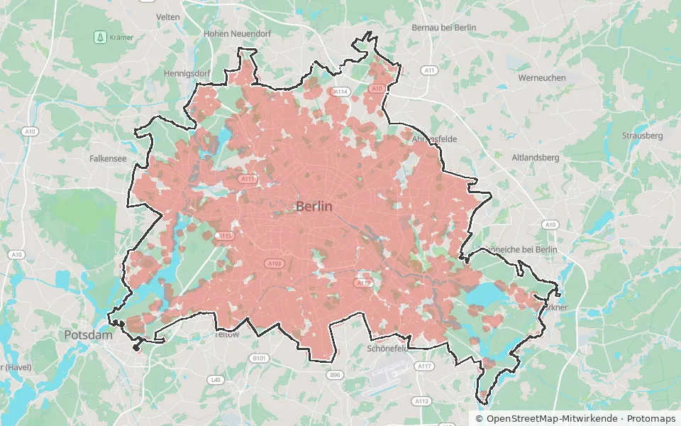
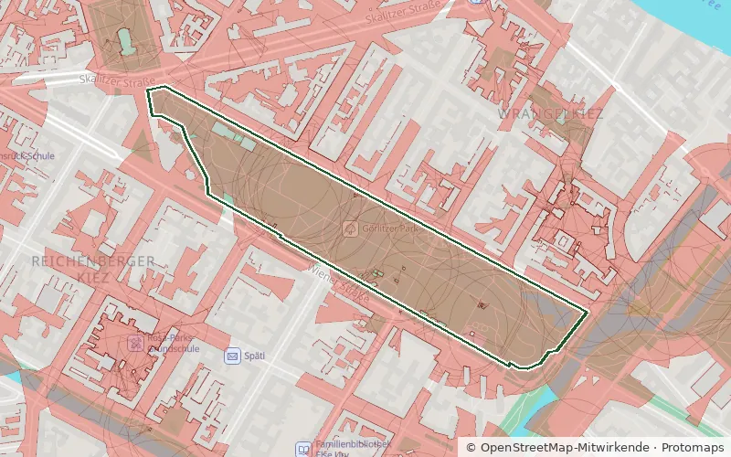
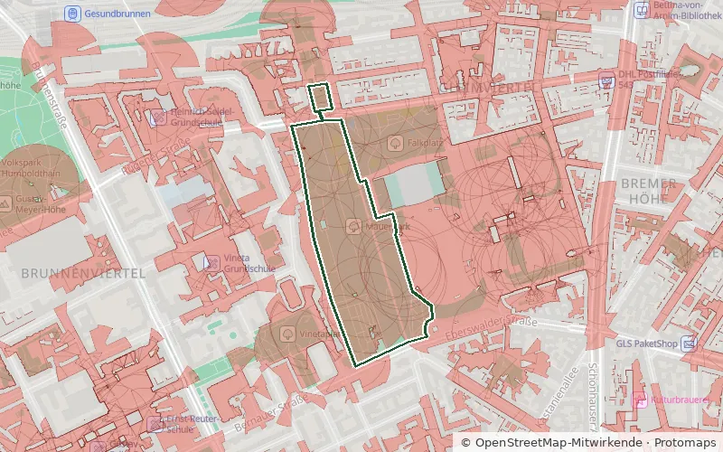
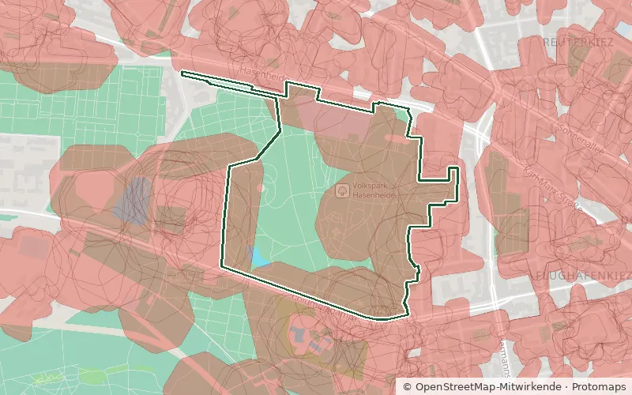
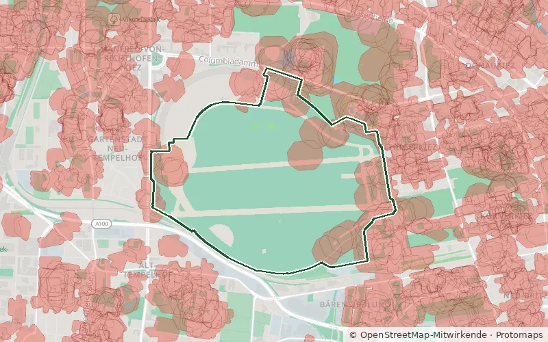
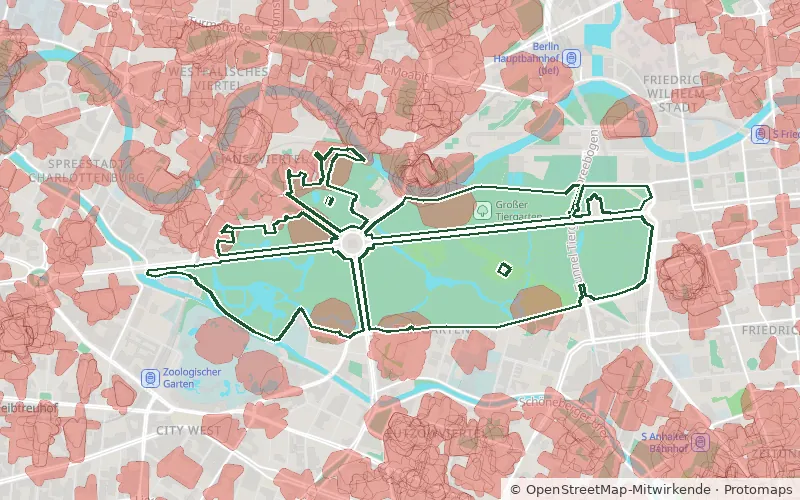
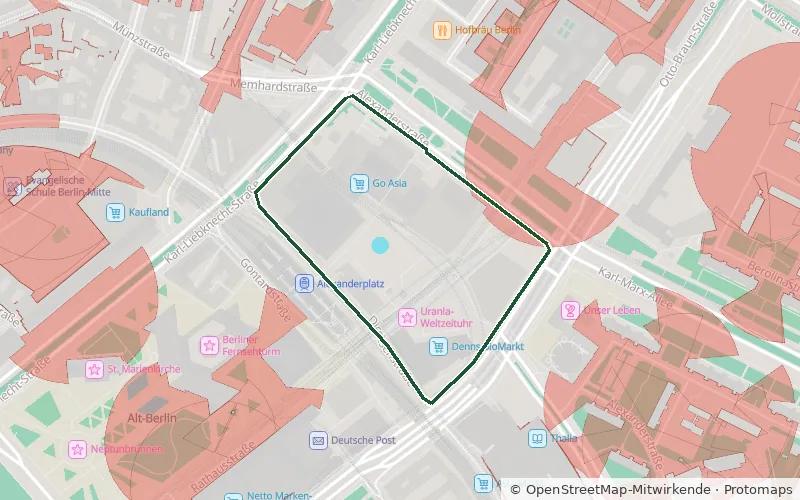

In Berlin ist öffentliches Kiffen auf 205 km² verboten, das sind 23,0 % der Stadtfläche von 892 km². Grund sind 15 571 Einrichtungen wie Schulen und Spielplätze: In ihrer Sichtweite, bis 100 Meter vom Eingang und ohne Gebäude dazwischen, verbietet § 5 KCanG den Konsum. Dazu kommen die Fußgängerzonen von 7 bis 20 Uhr und überall die Gegenwart von Minderjährigen.
Innerhalb des S-Bahn-Rings, gemessen an der Umweltzone, liegen 42 % der Fläche in einer Zone. Am Stadtrand sind es weniger: 21 % Berlins sind Wald, vom Grunewald bis zu den Müggelbergen, und dort liegen nur 7,8 % in einer Zone. Ohne den Wald gerechnet sind es 27,0 % der Stadtfläche.

Woher die Zonen in Berlin kommen
| Einrichtung | Anzahl | Zonenfläche |
|---|---|---|
| Schulen | 1 080 | 54,9 km² |
| Kitas und Kindergärten | 2 370 | 52,9 km² |
| Kindertagespflege | 135 | 2,4 km² |
| Spielplätze | 5 572 | 83,4 km² |
| Kinder- und Jugendeinrichtungen | 505 | 11,1 km² |
| Sportstätten | 5 908 | 93,9 km² |
| Anbauvereinigungen | 1 | unter 0,1 km² |
Jede Art für sich gezählt, Überlappungen also mehrfach. Anbauvereinigungen nur, soweit in OpenStreetMap eingetragen.
Den größten Teil machen die 5 908 Sportstätten aus, von Bolzplätzen über Turnhallen bis zu Fitnessstudios, gefolgt von 5 572 Spielplätzen und 2 370 Kitas.
Von den Anbauvereinigungen ist in OpenStreetMap nur eine Abgabestelle eingetragen, an der Goerzallee in Steglitz-Zehlendorf. Das Landesamt für Gesundheit und Soziales hatte bis Mai 2026 14 Anbauvereinigungen erlaubt, 13 davon waren gültig; wo sie anbauen und abgeben, ist nicht veröffentlicht (Antwort des Senats, Drucksache 19/26126). Ihre Zonen kann die Karte deshalb nur zum kleinsten Teil zeigen.
Görli, Mauerpark und die Parks der Innenstadt
Im Görlitzer Park liegen 99 % der Fläche in einer Zone, im Mauerpark 98 %. Der Grund liegt in den Parks selbst: Im Görli gibt es vier Spielplätze und 15 Sportanlagen, von Fußballplätzen über Basketballfelder bis zur Skateanlage, im Mauerpark elf Spielplätze. Frei bleiben nur einzelne Ecken.


Um den Görlitzer Park hat der Senat einen Zaun gebaut. Nachts geschlossen war der Park aber nur vom 1. März bis zum 1. Juni 2026: Das Verwaltungsgericht hat die Schließung im Eilverfahren gestoppt, das Oberverwaltungsgericht hat das im Oktober unanfechtbar bestätigt; der Park ist rund um die Uhr offen (OVG Berlin-Brandenburg). Der Park und der Wrangelkiez sind einer von sieben kriminalitätsbelasteten Orten, an denen die Polizei ohne Anlass kontrollieren darf, ebenso Alexanderplatz, Hermannplatz, Hermannstraße, Kottbusser Tor, Rigaer Straße und Warschauer Brücke (Verordnung vom Juni 2026). Ein Konsumverbot ist das nicht.
So sieht es in fast allen Parks innerhalb des Rings aus: Der Monbijoupark liegt zu 97 % in einer Zone, der Volkspark am Weinberg zu 99 %, der Park am Gleisdreieck zu 85 % und der Viktoriapark zu 76 %. In der Hasenheide sind es 63 %, im Volkspark Friedrichshain 61 %. Der Treptower Park an der Spree kommt nur auf 24 %.

Das Grünanlagengesetz verbietet in Parks weder Rauchen noch Alkohol; es regelt Nachtruhe, Hunde und Grillen (Parkregeln des Senats). Auch die Parkordnung des Mauerparks regelt nur Musik und Grillen.
Tempelhofer Feld und Tiergarten
Die großen Ausnahmen sind das Tempelhofer Feld (298 ha), das zu 23 % in einer Zone liegt, und der Große Tiergarten (180 ha) mit 12 %. Auf dem Feld liegen 21 Sportanlagen und drei Spielplätze, im Tiergarten sechs Spielplätze und keine Sportanlage; auf so großen Flächen erfassen die 100-Meter-Zonen vor allem die Ränder und einzelne Inseln.


Das Tempelhofer Feld ist nachts geschlossen; die Benutzungsordnung regelt Grillen und Hunde, zum Rauchen sagt sie nichts (Benutzungsordnung).
Plätze und Fußgängerzonen
Eine Fußgängerzone ist in Berlin ein Rechtsakt: Die Straße muss für Fahrzeuge teilweise eingezogen sein, und das Schild muss stehen. Eine amtliche Liste dieser Fußgängerzonen haben wir nicht gefunden; eine Antwort des Senats von 2022 zählt die Teileinziehungen seit 2012 auf, aber fünf Bezirke haben dazu nichts geliefert (Drucksache 19/11397). Belegt sind zum Beispiel die Wilmersdorfer Straße in Charlottenburg, Alt-Tegel und die Gorkistraße in Reinickendorf, die Altstadt Spandau und der Lausitzer Platz in Kreuzberg; die Friedrichstraße ist seit Juli 2023 keine Fußgängerzone mehr. Die Karte zeigt blau, was in OpenStreetMap als Fußgängerbereich eingetragen ist, und das ist mehr als die Fußgängerzonen im Rechtssinn.
In der Fußgängerzone der Wilmersdorfer Straße liegen außerdem 93 % in einer Sichtweiten-Zone. Der Alexanderplatz dagegen liegt nur zu 3 % in einer Zone, der Gendarmenmarkt zu 2 %, der Breitscheidplatz zu 3 %, der Hermannplatz zu 4 %. Ganz anders der Boxhagener Platz in Friedrichshain mit 99 % und das RAW-Gelände an der Revaler Straße mit 68 %.

Wald und Seen
Im Grunewald liegen 5 % in einer Zone, im Spandauer Forst 0 %, in den Müggelbergen 3 %. Das Strandbad Wannsee liegt dagegen ganz in einer Zone.
Hochschulen
Hochschulen sind nach § 5 KCanG keine Verbotsorte. Auf dem Hauptcampus der Technischen Universität in Charlottenburg liegen trotzdem 29 % in einer Zone, auf dem Campus der Freien Universität in Dahlem 12 %, auf dem Campus Nord der Humboldt-Universität 18 %; der Campus Mitte der Humboldt-Universität liegt außerhalb jeder Zone. Eine Hausordnung mit einer Regel zu Cannabis haben wir bei keiner Berliner Hochschule gefunden; die Hausordnung der HTW etwa verbietet das Rauchen in Gebäuden (HTW Berlin).
Feste und Veranstaltungen
Eine Allgemeinverfügung zu Cannabis für Feste, Parks oder Plätze haben wir in Berlin nicht gefunden. Wo viele Kinder und Jugendliche sind, auf Weihnachtsmärkten, beim Karneval der Kulturen oder an Silvester, greift das Verbot in ihrer Gegenwart (§ 5 Abs. 1 KCanG); Märkte in einer Fußgängerzone fallen tagsüber zusätzlich unter deren Verbot. Im Olympiastadion verbietet die Hausordnung den Konsum von Cannabis ausdrücklich (Hausordnung Olympiastadion).
Was sonst noch in Berlin gilt
Berlin hat einen eigenen Bußgeldkatalog: Konsum in einer Verbotszone, auch in der Fußgängerzone, kostet 250 bis 500 Euro, Konsum in Gegenwart von Kindern und Jugendlichen 300 bis 1.000 Euro (Amtsblatt für Berlin, November 2024). Zuständig sind die Bezirksämter. Die Polizei hat vom April 2025 bis Februar 2026 berlinweit 76 solcher Ordnungswidrigkeiten erfasst, davon 17 an Spielplätzen und eine in einer Fußgängerzone; Zahlen der Ordnungsämter gibt es nicht (Antwort des Senats, Drucksache 19/25438).
Ein Rauchverbot im Freien wie in Baden-Württemberg gibt es in Berlin nicht: Das Nichtraucherschutzgesetz gilt nur in Gebäuden. Auf dem Schulgelände ist Rauchen nach dem Schulgesetz verboten, auf Spielplätzen in den meisten Bezirken nach deren Spielplatzregeln (Stand 2018); der Senat hält Rauchen und Alkohol auf Spielplätzen auch ohne eigene Regel für unzulässig (Antwort des Senats, 2018). Eigene Verbotszonen für Cannabis haben Senat und Bezirke nicht festgelegt (Stand 26. November 2026).
Häufige Fragen zu Berlin
Wo darf man in Berlin kiffen?
Nach § 5 KCanG außerhalb der roten Flächen, etwa im Spandauer Forst (0 % in einer Zone) und in den Müggelbergen (3 %). Tagsüber nicht in den Fußgängerzonen, nie in Gegenwart von Minderjährigen und nicht gegen ein Hausrecht. Weiß heißt nicht sicher erlaubt: Hecken, Bäume und fehlende Einrichtungen kennt die Karte nicht.
Darf man im Görlitzer Park kiffen?
Fast nirgends: 99 % des Parks liegen in Sichtweite eines Spielplatzes oder einer Sportanlage. Auf den wenigen freien Ecken verbietet § 5 KCanG den Konsum in unmittelbarer Gegenwart von Kindern und Jugendlichen.
Wie genau ist das?
Täglich aus OpenStreetMap gerechnet, mit Gebäuden als Sichthindernis; die Zahlen hier sind vom 26. November 2026. Eine Orientierungshilfe, keine Rechtsauskunft (wie gerechnet wird).
Fehlt eine Einrichtung? Korrekturen in OpenStreetMap stehen am Tag darauf auf der Karte; bitte nur eintragen, was es vor Ort gibt.